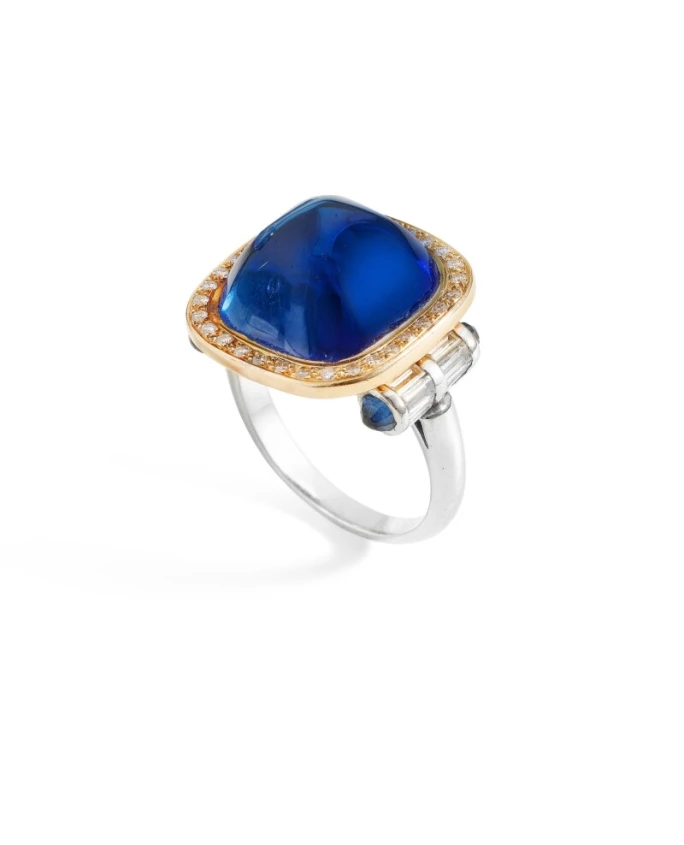
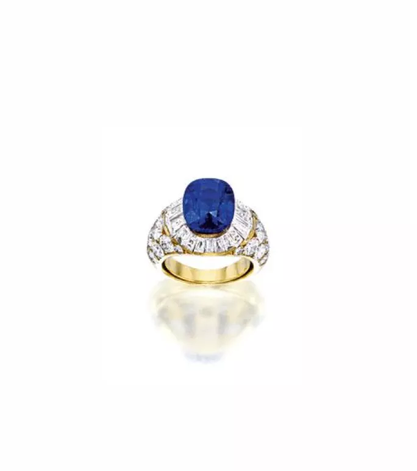
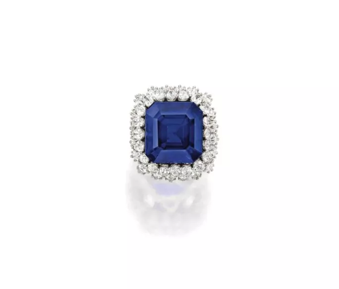
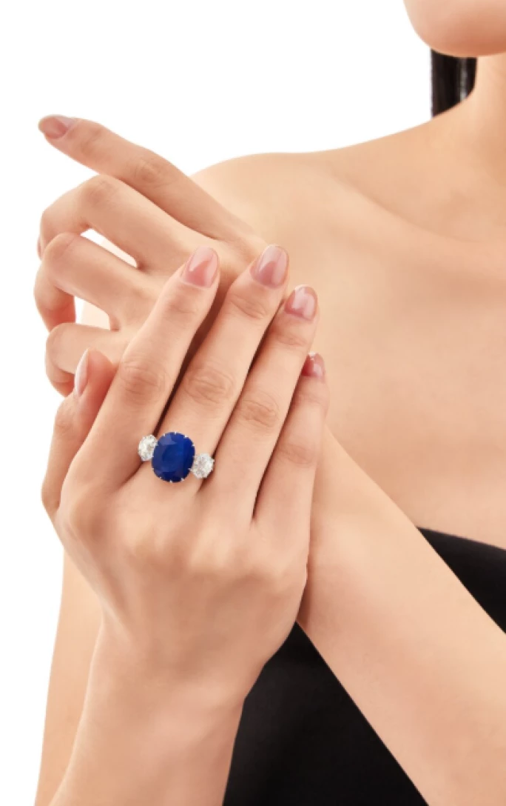
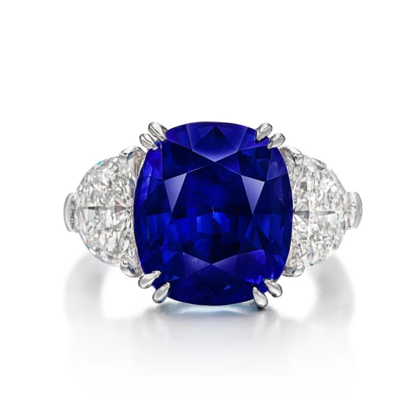

譯自 Lydia Dokko · Sotheby's
克什米爾藍寶石乃最稀有且備受追捧的瑰寶之一，本文將引領您辨識其獨特品質、追溯其傳奇淵源、並指點收藏要訣。
克什米爾藍寶石，以其醉人心魄之美與極致稀有而備受尊崇，堪稱全球藍寶石中的瑰寶。自 19 世紀發現以來，這些深邃的藍色寶石便令藏家、寶石學家與珠寶鑑賞家為之傾倒。克什米爾藍寶石的魅力不僅源於其如天鵝絨般柔潤的藍色光澤，更在於其珍罕及充滿傳奇色彩的淵源。從古波斯與印度（當地人相信藍寶石能帶來心靈啟迪與護佑），到 19 世紀的歐洲（藍寶石成為貴族珍藏中的重要組成部分），藍寶石珠寶在不同文化中向來佔有重要地位。克什米爾藍寶石進入全球寶石市場，標誌著彩色寶石鑑賞領域的轉捩點，為卓越品質樹立了全新典範。

20.84 克拉克什米爾藍寶石配鑽石戒指
克什米爾藍寶石的發現
克什米爾藍寶石的淵源可追溯至 1881 年。當時，喜馬拉雅山脈贊斯卡山脈的一場雪崩意外使深藏的豐富藍寶石礦脈重見天日；在早期寶石學文獻中，此偏遠地區被稱為「雪域彼端」。此地位於印度西北部，隱秘的偉晶岩礦囊中蘊藏著大量藍寶石。從 1882 年至 1887 年，礦工開採出部分有史以來最大、最優質的藍寶石，有些更長達三至五英寸。這段開採時期，即後來聞名遐邇的「舊礦」時期，在礦脈枯竭前，開採出的藍寶石瑰寶品質卓絕、數量空前。
在這段短暫的黃金時代之後，礦區沉寂了十餘年。在 1910 年至 1970 年代間，克什米爾政府與私人企業曾嘗試恢復該地區的開採，卻因地勢險惡與政局動盪，勘探與出口極為艱難，成果寥寥。然而，2024 年初，克什米爾官員與印度寶石和珠寶出口委員會合作宣布，會於 2024 年 5 月重啟開採，令全球寶石愛好者重燃熱情與希望。

獨特的克什米爾藍寶石配鑽石戒指，約 1938 年，梵克雅寶出品
克什米爾藍寶石的迷人之處
克什米爾藍寶石與眾不同之處，首推其明亮、如天鵝絨般柔潤的藍色，即一種濃郁飽和、彷彿由內而外散發光芒的色澤。這種強度與柔和的獨特結合，賦予其無可比擬的獨特氣質，遠非其他產地藍寶石所能企及。斯里蘭卡、緬甸和馬達加斯加的藍寶石或帶有紫色或灰色底調，而克什米爾藍寶石則以純正的矢車菊藍色而備受推崇，在不同光線條件下皆能保持鮮亮；其極致的稀有更添神秘色彩。「舊礦」的活躍期僅有 1880 年代短短五年，此後產量時斷時續，使得這些藍寶石成為現存最稀有的天然寶石之一，因而極具價值且大受追捧。
在當今全球珠寶市場，天然未經加熱處理的藍寶石，尤其是源自克什米爾的，最令人垂涎不已。在高端市場，其珍貴程度與價格往往超越頂級祖母綠與紅寶石。除了美學上的吸引力，藍寶石長久以來亦與精神及情感福祉相關聯。在許多傳統中，藍寶石被認為具有鎮靜心緒、舒緩壓力、增進忠誠與智慧的功效。克什米爾藍寶石尤其被認為與眉心輪相應，能提升直覺、抵禦負面能量侵擾，足見其象徵意義與恆久魅力。

「The Jewel of Kashmir」27.68 克拉藍寶石配鑽石戒指
拍賣場上的克什米爾藍寶石
蘇富比在呈獻及拍賣頂級克什米爾藍寶石方面，始終引領市場。其中最矚目的成交之一是一對「黎塞留藍寶石」（Richelieu Sapphires）枕形藍寶石耳環，於 2013 年以 770 萬瑞士法郎售出。這對耳環原屬黎塞留公爵夫人奧迪爾（Odile de Richelieu, Countess Gabriel de La Rochefoucauld）珍藏，是她 1905 年新婚時獲贈的禮物，為非凡的寶石品質更添一層厚重的歷史意涵。另一件傑出拍品是「The Jewel of Kashmir」，一枚 27.68 克拉祖母綠切割藍寶石戒指，於 2015 年香港蘇富比以 5,230 萬港元（即約 670 萬美元）成交。

11.56 克拉克什米爾藍寶石配鑽石戒指
延續傳統，蘇富比於 2025 年 4 月 25 日在香港舉行的「高級珠寶」拍賣會，隆重推出一枚重達 11.56 克拉的克什米爾藍寶石配鑽石戒指。主石為一顆枕形藍寶石，兩側鑲嵌古歐洲式切割鑽石，以 18K 白金鑲嵌。此戒指附有 SSEF、Gübelin、AGL 及 GRS 的鑑定報告，證實拍品源自克什米爾產地、而且未經加熱處理或淨度優化，彰顯藏家所追求的純淨無瑕品質。寶石濃郁的中等深藍色澤與卓越的來源傳承，使其成為此次拍賣的焦點，並為藏家提供難能可貴的機會，得以將此來源顯赫的珍品收入囊中。

12.52 克拉克什米爾藍寶石戒指
克什米爾藍寶石價格
克什米爾藍寶石的市場價格充分反映其稀有程度與尊貴地位，價格因克拉重量、品質、鑲嵌、品牌及來源而異。在蘇富比，若鑲嵌於簡約設計中，小克拉數（3 克拉以下）的天然未經加熱處理克什米爾藍寶石起價約為 2 萬美元。然而，高品質的克什米爾藍寶石在過去數年間價值急劇攀升。大多數在拍賣會上售出的克什米爾藍寶石價格介於 10 萬美元至逾百萬美元之間，而極品往往遠超估價。2024 年，一枚 17.29 克拉的克什米爾藍寶石戒指以 340 萬瑞士法郎成交，是最高估價 80 萬瑞士法郎的三倍有餘。同年，一枚由「Marcus & Co.」出品的 10.31 克拉克什米爾藍寶石以近 200 萬美元成交，遠超其 70 萬美元估價。這些佳績進一步彰顯了克什米爾藍寶石在全球頂級彩色寶石中無可取代的價值與備受青睞的地位。
克什米爾藍寶石不僅是寶石，更是大自然的奇蹟，其歷史如同色澤一般豐富迷人。從在喜馬拉雅山脈的戲劇性發現，到在拍賣場上的耀眼崛起，這些稀世藍寶石始終是奢華、精神寓意與永恆優雅的象徵。對藏家、寶石學家及愛好者而言，克什米爾藍寶石代表寶石美學與收藏價值的巔峰。隨著大眾興趣日益濃厚，加上重啟開採計劃的推動，這些非凡寶石正蓄勢待發，準備譜寫新的華章，繼續吸引未來世代的目光。